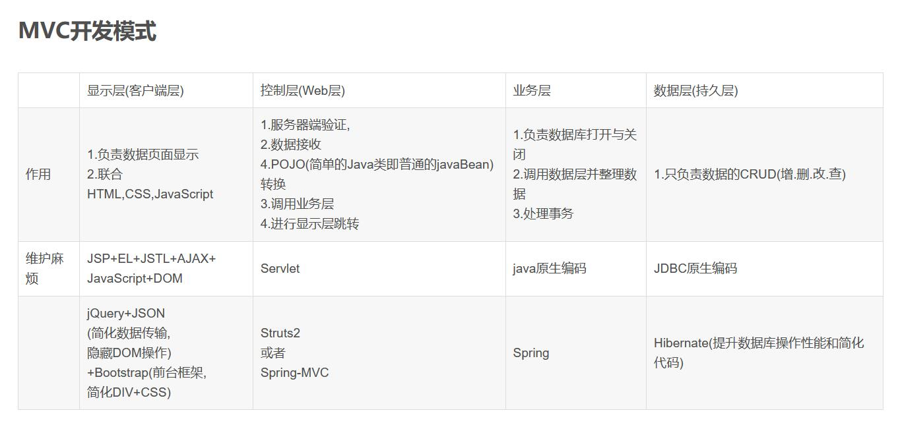

Structs框架是最早的Java开源框架之一.Struts是MVC设计模式的一个优秀实现.
Struts是最早的java开源框架之一，它是MVC设计模式的一个优秀实现。 Struts定义了通用的Controller（控制器），通过配置文件（通常是 Struts -config.xml）隔离Model（模型）和View（视图），以Action的概念以对用户请求进行了封装，使代码更加清晰易读。 Struts还提供了自动将请求的数据填充到对象中以及页面标签等简化编码的工具。 Struts能够开发大型Java Web项目。
Struts2以WebWork优秀的设计思想为核心，吸收了 Struts框架的部分优点，提供了一个更加整洁的MVC设计模式实现的Web 应用程序框架。 Struts2引入了几个新的框架特性：从逻辑中分离出横切关注点的拦截器、减少或者消除配置文件、贯穿整个框架的强大表达式语言、支持可变更和可重用的基于MVC模式的标签API， Struts2充分利用了从其它MVC框架学到的经验和教训，使得 Struts2框架更加清晰灵活。
Hibernate是一个开放源代码的对象关系映射框架
它对JDBC进行了非常轻量级的对象封装，它将POJO与数据库表建立映射关系，是一个全自动的orm框架，hibernate可以自动生成SQL语句，自动执行，使得Java程序员可以随心所欲的使用对象编程思维来操纵数据库。 Hibernate可以应用在任何使用JDBC的场合，既可以在Java的客户端程序使用，也可以在Servlet/JSP的Web应用中使用，最具革命意义的是，Hibernate可以在应用EJB的J2EE架构中取代CMP，完成数据持久化的重任。
Spring框架是由于软件开发的复杂性而创建的。
Spring使用的是基本的JavaBean来完成以前只可能由EJB完成的事情。然而，Spring的用途不仅仅限于服务器端的开发。从简单性、可测试性和松耦合性角度而言，绝大部分Java应用都可以从Spring中受益。
